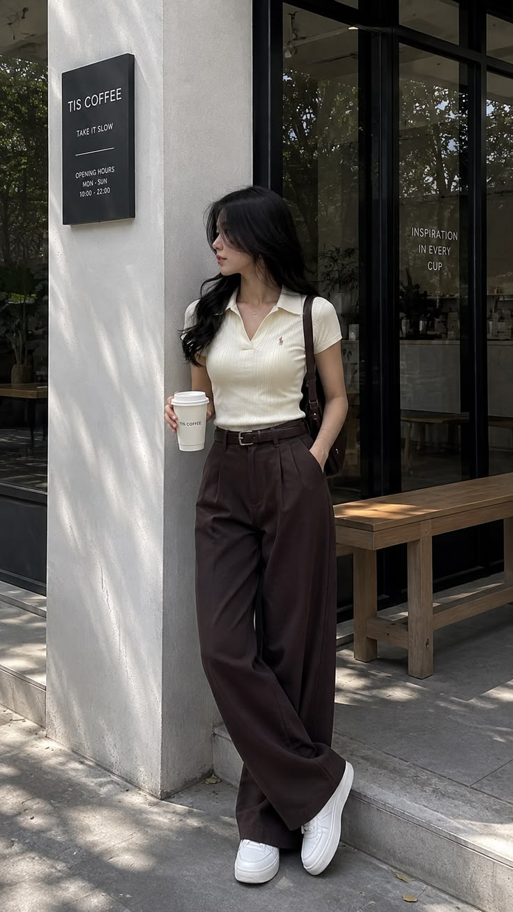
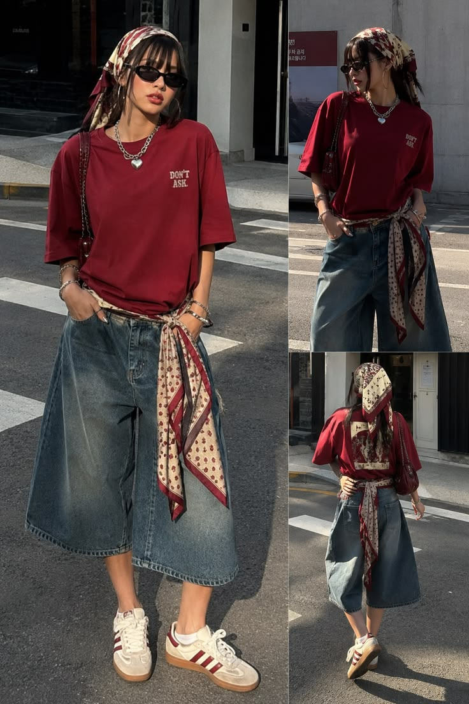
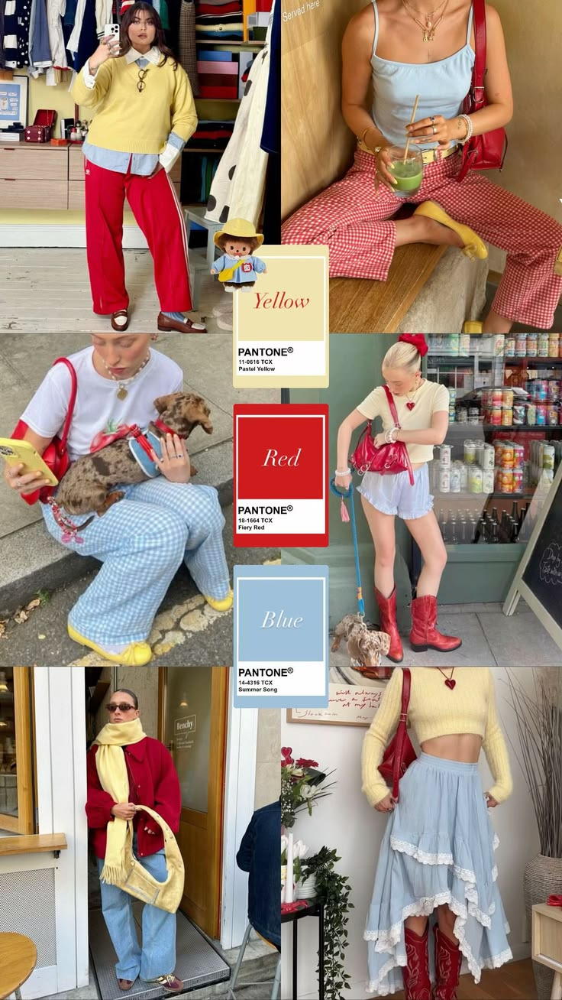
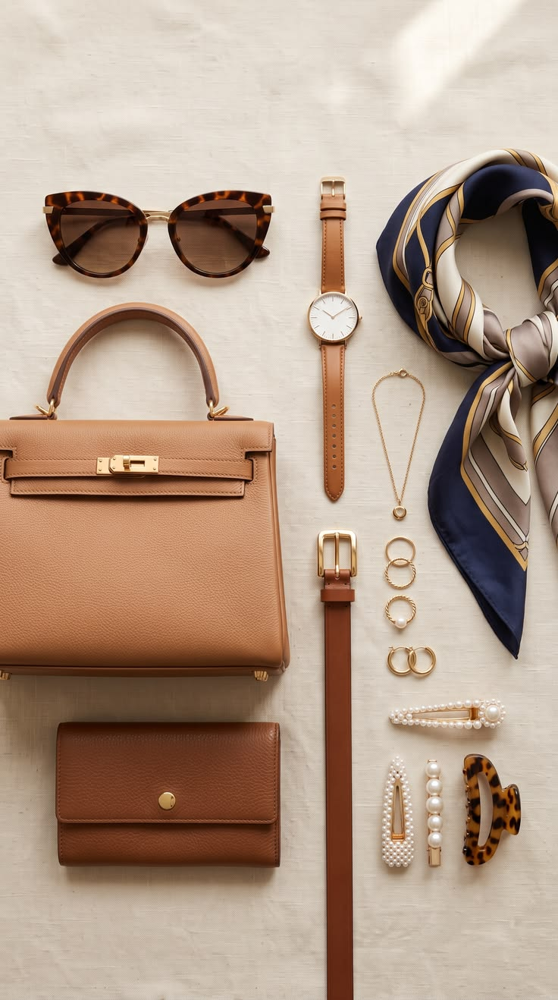

Tentang Blog Ini
Fashion Vibes adalah blog yang membahas fashion, gaya berpakaian, cara memadukan warna, dan aksesori.
Blog ini dibuat untuk membantu pembaca menemukan inspirasi outfit yang sederhana, nyaman, dan menarik.
Style santai untuk tampil percaya diri
Fashion Vibes adalah blog yang membahas fashion, gaya berpakaian, cara memadukan warna, dan aksesori.
Blog ini dibuat untuk membantu pembaca menemukan inspirasi outfit yang sederhana, nyaman, dan menarik.

Untuk outfit sehari-hari, pilihlah pakaian yang nyaman dan sesuai dengan aktivitas. Kaos, celana jeans, dan sneakers dapat menjadi pilihan yang sederhana.
Gunakan pakaian dengan ukuran yang sesuai agar tetap nyaman dan terlihat rapi.

Streetwear adalah gaya berpakaian yang terinspirasi dari budaya jalanan. Gaya ini biasanya menggunakan kaos, hoodie, celana longgar, topi, dan sneakers.
Streetwear cocok untuk orang yang ingin tampil santai tetapi tetap terlihat modern.

Agar outfit terlihat menarik, gunakan warna yang saling cocok. Warna netral seperti hitam, putih, abu-abu, dan krem mudah dipadukan dengan warna lain.
Jangan menggunakan terlalu banyak warna dalam satu outfit agar penampilan tetap terlihat rapi.

Aksesori seperti jam tangan, tas, topi, gelang, dan kacamata dapat membuat outfit terlihat lebih menarik.
Pilih aksesori yang sesuai dengan warna dan gaya pakaian agar penampilan terlihat seimbang.
Blog ini dapat membantu toko pakaian, butik, toko sepatu, dan penjual aksesori untuk memperkenalkan produknya kepada calon pelanggan.
Bisnis dapat menampilkan foto produk, harga, ukuran, warna, promosi, lokasi toko, dan link pembelian.
Tulis pendapat kamu tentang fashion.